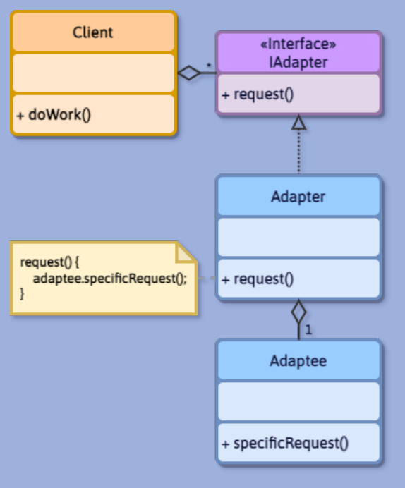
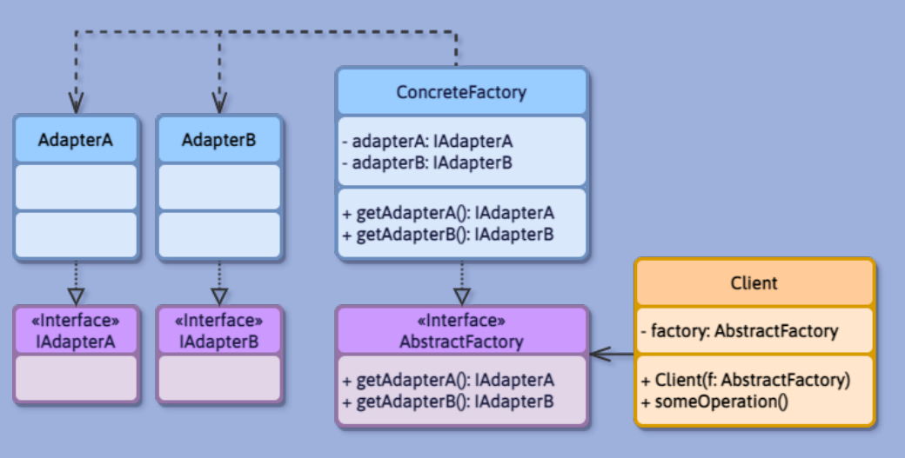
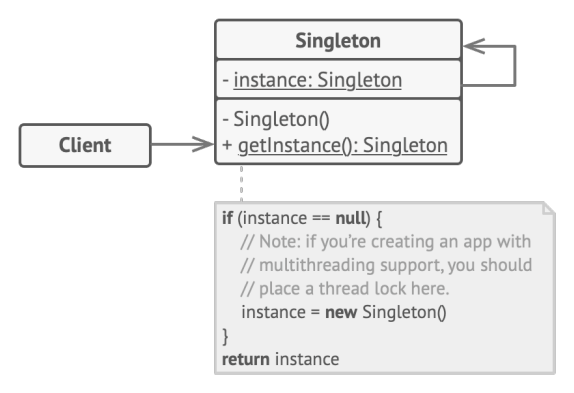
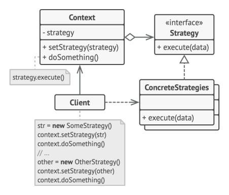
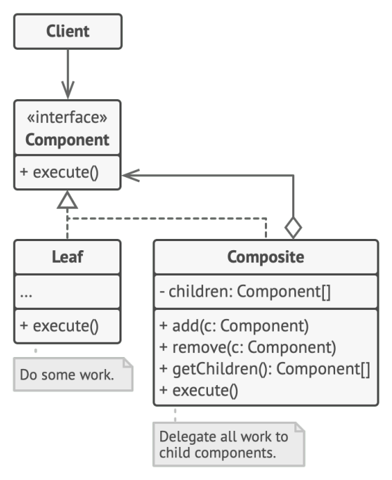
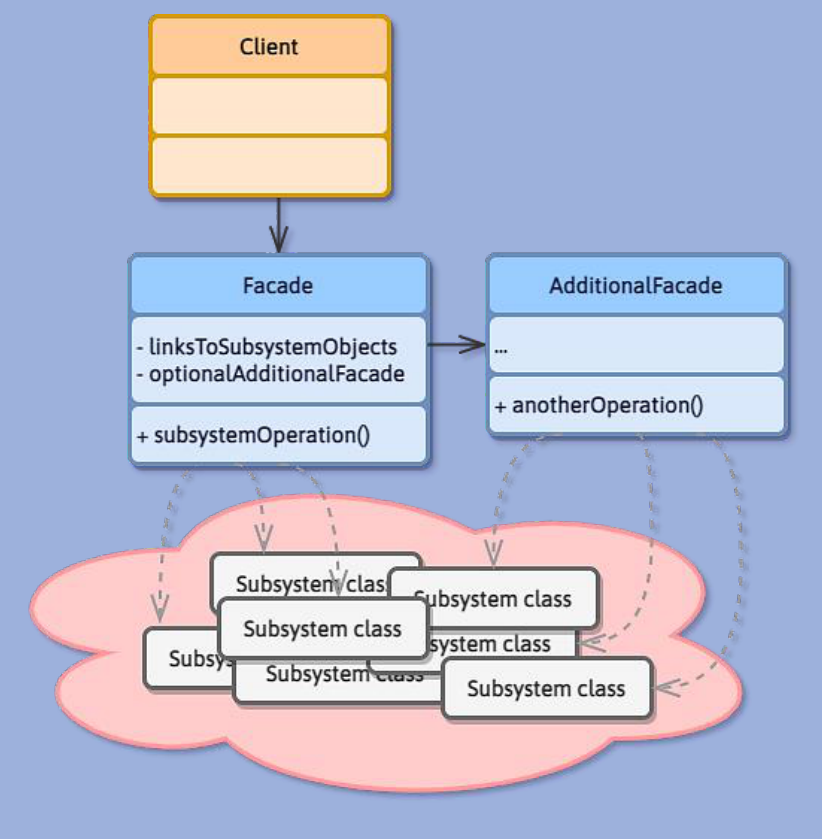
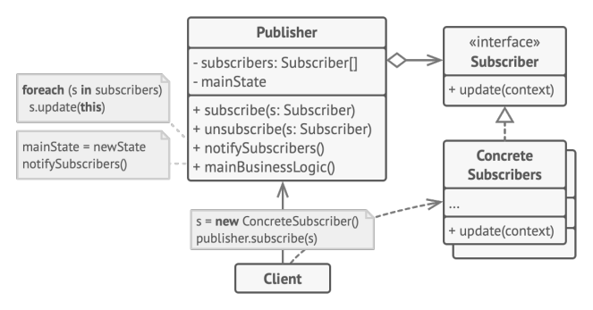

00Overview · File unico APS
Tutto il materiale APS in un solo file: piano di studio, teoria ragionata, palazzo della memoria, flashcard, bigino.
📝 Scritto
🎤 Orale (atteso)
Una sola fonte di verità. Apri il sommario a sinistra e naviga: c'è tutto, dal piano di studio quotidiano alla teoria sezione per sezione, al palazzo della memoria, alle 60 flashcard.
Modalità di studio: leggi le sezioni di teoria (riquadri azzurri per capire, verdi per memorizzare). Quando hai studiato un argomento, premi 🙈 Interrogazione per nascondere i cloze (•••) e testarti.
Il piano in alto ha checkbox per ogni task: spuntale man mano, il browser salva lo stato. Le flashcard hanno frecce ←/→ per navigare e spazio per girare.
- Mai rilettura passiva. Se ti accorgi che stai "leggendo per leggere", chiudi e prova a ridire a voce. Sei stato bocciato 2 volte all'orale per questo.
- Disegno UML a mano su foglio bianco. Sempre. Confronta DOPO, mai durante.
- Tutto a voce, anche se sei solo. La verbalizzazione attiva è ciò che ti permette di rispondere all'orale.
- Esempio dal gestionale FF PHONE LAB per OGNI concetto. Senza esempio è solo riconoscimento, non richiamo.
- Stop alle 22:30. Il sonno consolida la memoria.
PPiano 10 giorni + orale
Da oggi (sab 14/06) allo scritto (mer 24/06), poi 3-4 giorni di solo orale a voce.
G1 · domenica 14 giugno
G2 · lunedì 15 giugno
G3 · martedì 16 giugno
G4 · mercoledì 17 giugno
G5 · giovedì 18 giugno
G6 · venerdì 19 giugno
G7 · sabato 20 giugno
G8 · domenica 21 giugno
G9 · lunedì 22 giugno
G10 · martedì 23 giugno · Ripasso totale
📝 mer 24 giugno · SCRITTO
O1 · giovedì 25 giugno
O2 · venerdì 26 giugno
O3 · sabato 27 giugno (o vigilia orale)
🎤 Giorno dell'orale
🗺️Mappa dei processi software
Cascata · iterativo · UP · agile · SCRUM: cosa sta su cosa? La gerarchia per non confondersi mai più.
I libri mescolano termini che vivono su livelli diversi: \"processo\", \"modello\", \"metodo\", \"filosofia\". Il prof all'orale ti aspetta proprio qui: se rispondi \"agile è un processo\" sei già in fuori onda. Mappa in 3 livelli:
I 3 livelli da tenere distinti
Processo software = approccio disciplinato che definisce ruoli, attività e organizzazione temporale per costruire/rilasciare/mantenere il software.
Pensa al \"motore\" dell'auto: ogni auto ce l'ha, ma può essere di tipi diversi.
Come distribuisco nel tempo le attività del processo. 2 famiglie principali:
- 📉 Cascata: sequenziale, una sola passata (analisi → progetto → codice → test). Rigida ai cambiamenti.
- 🌀 Iterativo + incrementale + evolutivo: N iterazioni di 2-6 settimane, ognuna fa tutte le attività. Flessibile, feedback continuo.
Pensa al \"cambio\" dell'auto: 1ª marcia (cascata) o automatico (iterativo).
| Nome | Cos'è davvero | Esempio |
|---|---|---|
| UP (Unified Process) | Larman: 4 fasi IECT, casi d'uso, GRASP | |
| Agile | Manifesto 2001: 4 valori + 12 principi | |
| SCRUM | Sprint, ScrumMaster, Product Owner, backlog | |
| XP, Kanban, Crystal | Altri metodi agili | Stessa filosofia, regole diverse |
⚠️ Le confusioni tipiche d'esame (dispelle)
FALSO. Agile e UP vivono su livelli diversi. UP PUÒ ESSERE applicato in modo agile (alleggerendo gli elaborati). Sono
FALSO. Agile è il cappello, SCRUM è uno dei tanti vestiti sotto quel cappello. Confondere il
FALSO. Iterativo è un
Quasi vero ma fuorviante. La cascata non è \"una iterazione\": è proprio un
- PROCESSO = il MOTORE dell'auto (concetto generico)
- MODELLO = il CAMBIO (cascata = 1ª marcia · iterativo = automatico)
- UP / SCRUM = le MARCHE di auto (Toyota UP, Ferrari SCRUM)
- AGILE = lo STILE DI GUIDA (calmo, reattivo)
UP può essere guidato \"agile\" (stile reattivo). La cascata di solito \"rigido\". Sono dimensioni indipendenti.
\"Un processo software è un approccio disciplinato che definisce ruoli, attività e organizzazione temporale. Esistono diversi modelli di organizzazione, principalmente la cascata (sequenziale, una sola passata) e l'iterativo/incrementale (più cicli di 2-6 settimane). Un esempio concreto di processo iterativo è UP, che ha 4 fasi (IECT) ed è pilotato dai casi d'uso. Agile, invece, non è un processo: è una filosofia di sviluppo del Manifesto 2001 che privilegia flessibilità e collaborazione col cliente. SCRUM è un metodo concreto che realizza la filosofia agile, con sprint, ruoli (ScrumMaster, Product Owner) e backlog.\"
01UP — Unified Process
Processo iterativo, incrementale, evolutivo per software OO.
UP non è il modello a cascata (analisi→progetto→codice tutto una volta). UP è iterativo: si fa tutto, più volte, in piccole iterazioni di 2-6 settimane, ognuna delle quali produce una release funzionante.
- 4 fasi (IECT): Ideazione · Elaborazione · Costruzione · Transizione.
- 3 caratteristiche (CAI): pilotato dai Casi d'uso · centrato sull'Architettura · Iterativo.
- Ogni iterazione fa tutte le discipline, cambia solo l'enfasi.
Cosa significa UP?
4 fasi UP.
3 caratteristiche.
Iterazione vs release vs incremento.
02Casi d'uso
Storia testuale di un'interazione attore↔sistema per raggiungere un obiettivo.
Un UC è il copione di un dialogo tra un attore e il sistema, con scenario principale + alternative. È testo, non disegno. Il diagramma UC è solo un indice; il contenuto è nel testo.
- 4 attori (PFSF): Primario · Fuori scena · Secondario · Fattore esterno.
- 3 formati: alto livello · essenziale · esteso (con pre/post-condizioni e alternative).
- 3 test (CED): Capo · Elemento atomico · Discreto.
Cos'è un caso d'uso?
4 attori.
3 test.
Cosa contiene UC esteso?
03Modello di dominio
Fotografia del mondo reale del problema tradotta in classi.
Mappa concettuale del business (Cliente, Ordine, Prodotto e come si collegano). È fatto in analisi, non progettazione: niente metodi, niente classi tecniche.
- SÌ: classi del dominio · attributi semplici · associazioni con molteplicità.
- NO: metodi · tipi primitivi · classi software/tecniche.
- Aggregazione (◇) vs Composizione (◆): parte vive senza vs parte muore col tutto.
Cosa contiene il modello di dominio?
3 cose che NON contiene.
Aggregazione vs Composizione.
04SSD + Contratti
Dal caso d'uso testuale a una formalizzazione eseguibile.
SSD = Sequence Diagram con il sistema come scatola nera. Mostra gli eventi di sistema attore→sistema senza preoccuparsi del dentro. Uno per UC.
Contratto = descrizione precisa di cosa cambia nello stato del sistema quando un'operazione si conclude. Uno per ogni evento di sistema dell'SSD.
- SSD: sistema come unica scatola nera. Uno per UC.
- 4 elementi contratto: Nome · Pre · Post · Riferimenti al UC.
- Post-condizioni: istanze create/cancellate, attributi modificati, associazioni formate/spezzate.
Cos'è un SSD?
4 elementi del contratto.
Cosa va nelle post-condizioni?
05Architettura + Diagrammi di interazione
Il software OO si organizza a 3 strati: Presentazione (UI) → Dominio (business) → Persistenza/Servizi. Le dipendenze vanno SOLO verso il basso: la UI non sa di SQL, il dominio non sa di pixel.
I diagrammi di interazione mostrano la collaborazione tra oggetti per un'operazione. Sequence = vista temporale (lifelines verticali). Communication = vista strutturale (rete con messaggi numerati). Stesso contenuto, viste diverse.
- 3 strati: UI · Dominio · Persistenza/Servizi.
- Regola d'oro: dipendenze solo verso il basso.
- Sequence = temporale · Communication = strutturale.
3 strati.
Regola dipendenze.
Sequence vs Communication.
06GRASP — 9 principi
Le 9 regole per decidere a chi assegnare una responsabilità.
GRASP = General Responsibility Assignment Software Patterns. Principi (non pattern con UML) che rispondono sempre alla stessa domanda. 5 base + 4 avanzati.
Avanzati (PPIP): Polymorphism · Pure Fabrication · Indirection · Protected Variations.
I 5 base
| Pattern | Problema | Soluzione |
|---|---|---|
| Information Expert | a chi assegnare una resp? | alla classe che ha le informazioni. |
| Creator | chi crea A? | B se contiene/aggrega/usa/ha i dati di A. |
| Low Coupling | ridurre dipendenze | minimizzare l'accoppiamento non necessario. |
| High Cohesion | classi focalizzate | responsabilità strettamente correlate. |
| Controller | chi gestisce eventi di sistema | Façade Controller o Use-Case Controller. |
I 4 avanzati
| Pattern | Problema | Soluzione |
|---|---|---|
| Polymorphism | alternative basate sul tipo | operazioni polimorfe, no if/switch. |
| Pure Fabrication | Expert violerebbe coesione/accopp. | classe artificiale, non di dominio. |
| Indirection | evitare accoppiamento diretto | oggetto intermediario. |
| Protected Variations | isolare variazioni | interfaccia stabile sui punti di variazione. |
• Protected Variations è principio ombrello, si realizza con altri pattern.
• Pure Fabrication: mostra COME interagisce (sequence), non basta crearla.
Cosa significa GRASP?
Quanti, divisi come?
Information Expert vs Pure Fabrication.
Indirection vs Pure Fabrication.
Polymorphism GRASP vs polimorfismo del linguaggio.
07GoF — 7 pattern del prof
Distribuzione 2-3-2 (Creazionali · Strutturali · Comportamentali). 23 totali (5-7-11).
2-3-2 = del prof: Factory+Singleton · Adapter+Composite+Facade · Strategy+Observer.
1. Adapter strutturale
A cosa serve: tradurre un'interfaccia in un'altra incompatibile tramite classe intermedia.

request() · 2) Adapter che la realizza · 3) Adaptee preesistente con specificRequest() · 4) Adapter ha-a Adaptee + delega.| Elemento | Tipo | Attributi | Metodi |
|---|---|---|---|
| IAdapter | «interface» | — | + request() |
| Adapter | classe (realizza IAdapter) | — | + request() { adaptee.specificRequest(); } |
| Adaptee | classe preesistente | — | + specificRequest() |
| Client | classe | — | + doWork() |
2. Factory creazionale
A cosa serve: Pure Fabrication che incapsula la creazione complessa e ritorna un'interfaccia.

create().| Elemento | Tipo | Attributi | Metodi |
|---|---|---|---|
| Product | «interface» | — | (metodi del prodotto) |
| ConcreteProduct A/B | classi concrete | — | (implementazioni) |
| Factory | classe (Pure Fabrication) | — | + create(): Product |
| Client | classe | - factory: Factory | (usa solo Product) |
3. Singleton creazionale
A cosa serve: garantire una sola istanza con accesso globale.

- instance: Singleton sottolineato (static) · - Singleton() privato · + getInstance(): Singleton sottolineato.| Elemento | Tipo | Attributi | Metodi |
|---|---|---|---|
| Singleton | classe (molt. "1") | - instance: Singleton | - Singleton() priv. + getInstance(): Singleton |
| Client | classe | — | (chiama Singleton.getInstance()) |
4. Strategy comportamentale
A cosa serve: algoritmi intercambiabili dietro la stessa interfaccia.

- strategy e setStrategy() · delega strategy.execute().| Elemento | Tipo | Attributi | Metodi |
|---|---|---|---|
| Strategy | «interface» | — | + execute(data) |
| ConcreteStrategies | classi (realizzano Strategy) | — | + execute(data) |
| Context | classe | - strategy | + setStrategy(s) + doSomething() { strategy.execute() } |
5. Composite strutturale
A cosa serve: trattare foglia e gruppo nello stesso modo (alberi).

| Elemento | Tipo | Attributi | Metodi |
|---|---|---|---|
| Component | «interface» | — | + execute() |
| Leaf | classe (realizza Component) | — | + execute() |
| Composite | classe (realizza Component) | - children: Component[] | + add(c) · + remove(c) + execute() { children.forEach(c=>c.execute()) } |
6. Facade strutturale
A cosa serve: un solo punto di contatto verso un sottosistema complesso.

| Elemento | Tipo | Attributi | Metodi |
|---|---|---|---|
| Facade | classe (unico ingresso) | - linksToSubsystem | + subsystemOperation() |
| Subsystem classes | N classi del sottosistema | — | — |
| Client | classe | — | (usa solo Facade) |
7. Observer comportamentale
A cosa serve: più subscriber notificati ai cambiamenti del publisher.

| Elemento | Tipo | Attributi | Metodi |
|---|---|---|---|
| Subscriber | «interface» | — | + update(context) |
| ConcreteSubscribers | classi (realizzano Subscriber) | — | + update(context) |
| Publisher | classe | - subscribers: Subscriber[] - mainState | + subscribe(s) · + unsubscribe(s) + notifySubscribers() + mainBusinessLogic() |
• Adapter vs Facade: Adapter traduce (1↔1), Facade semplifica (N→1).
• Composite: senza la 0..* verso Component hai sbagliato.
• Singleton lazy: senza synchronized fai 2 istanze in multi-thread.
23 GoF divisi come?
I 7 del prof.
Adapter schema: i 4 elementi.
Singleton: 3 elementi essenziali.
Composite: cuore del pattern.
Observer: cuore del pattern.
08UML — Legenda dei collegamenti
| Simbolo | Nome | Significato |
|---|---|---|
| ───▷ | Generalizzazione | continua + triangolo vuoto. Ereditarietà verso superclasse. |
| - - -▷ | Realizzazione | tratteggiata + triangolo vuoto. Implementa interfaccia. |
| ───── | Associazione | continua. Si conoscono, con molteplicità. |
| ────▶ | Associazione orientata | freccia piena: A conosce B, B non sa di A. |
| - - -▶ | Dipendenza | tratteggiata + freccia piena. "Usa al volo". |
| ◇──── | Aggregazione | rombo vuoto. Parte vive senza il tutto. |
| ◆──── | Composizione | rombo pieno. Parte muore col tutto. → Creator. |
| «interface» | Stereotipo | virgolette francesi sopra il nome. Anche «abstract». |
| nome | Static | sottolineato = static (es. getInstance del Singleton). |
| 1, 0..*, n..m | Molteplicità | numero agli estremi. La 0..* di Composite è cuore del pattern. |
• Continua vs tratteggiata
• Rombo vuoto vs pieno
• Verso del triangolo: SEMPRE verso il "padre"
Triangolo vuoto + continua.
Triangolo vuoto + tratteggiata.
Freccia piena + tratteggiata.
Rombo vuoto vs pieno.
Sottolineato in UML.
09Diagramma delle classi
Modello di dominio arricchito con metodi, visibilità, classi tecniche. Siamo in progettazione.
- 4 visibilità:
+public ·-private ·#protected ·~package. - Attributo:
vis nome: tipo [molt] = default - Metodo:
vis nome(par): ret - Static = nome sottolineato
4 visibilità UML.
Modello di dominio vs Diagramma di classi di progetto.
10Macchine a stati
Rappresentano il ciclo di vita di un oggetto con stati e transizioni. Solo per oggetti con comportamento dipendente dallo stato (es. Ordine: creato → spedito → consegnato).
- Iniziale = pallino nero · Finale = pallino cerchiato.
- Transizione:
evento [condizione] / azione - 4 eventi (CSVT): Creation · Signal · Value · Transition temporale.
Sintassi transizione.
4 eventi.
11TDD + Refactoring
TDD: scrivi prima il test (fallisce), poi il codice minimo che lo fa passare, poi ripulisci. Ciclo Red-Green-Refactor.
Refactoring: cambiare la struttura interna senza alterare il comportamento esterno. Per ridurre i "code smell".
UIEA = 4 livelli test: Unità · Integrazione · E2E · Accettazione
PEVR = 4 proprietà unità: Piccolo · Eseguibile isolato · Veloce · Ripetibile
Ciclo TDD.
4 livelli test.
4 proprietà test unità.
🏛Palazzo della Memoria
Casa tua → 9 GRASP + 7 GoF. Per ogni locus: domanda (giallo) → scena (verde) → pattern.
I 9 GRASP — percorso casa
I 7 GoF — palazzo (Studio · Bagno · Camera)
📚 Studio (2 Creazionali)
🛁 Bagno (3 Strutturali)
🛏️ Camera (2 Comportamentali)
🧠Muro dei Mnemonici
| Argomento | Mnemonico |
|---|---|
| 4 fasi UP | IECT — Ideazione · Elaborazione · Costruzione · Transizione |
| 3 caratteristiche UP | CAI — Casi d'uso · Architettura · Iterativo |
| 4 attori UC | PFSF — Primario · Fuori scena · Secondario · Fattore esterno |
| 3 test UC | CED — Capo · Elemento atomico · Discreto |
| 5 GRASP base | CILHC — Creator · Information Expert · Low Coupling · High Cohesion · Controller |
| 4 GRASP avanzati | PPIP — Polymorphism · Pure Fabrication · Indirection · Protected Variations |
| 23 GoF totali | 5-7-11 — Creazionali · Strutturali · Comportamentali |
| 7 GoF del prof | 2-3-2 — Factory+Singleton · Adapter+Composite+Facade · Strategy+Observer |
| 4 eventi stati | CSVT — Creation · Signal · Value · Transition |
| Ciclo TDD | RGR — Red · Green · Refactor |
| 4 livelli test | UIEA — Unità · Integrazione · E2E · Accettazione |
| 4 proprietà test unità | PEVR — Piccolo · Eseguibile isolato · Veloce · Ripetibile |
| 3 strati architettura | UI → Dominio → Persistenza |
| Composizione | ◆ Pieno = Crea (suggerisce Creator) |
🃏Flashcard (60)
Mazzo completo, brevissime e mirate. Spazio = gira · ←/→ = naviga · 🔀 = mischia.
🎧 Legge domanda e risposta e passa da solo alla card successiva (puoi spegnere lo schermo).
Per la voce più umana: apri in Microsoft Edge e scegli una voce "Online (Natural)".
Versione statica:
UP — cosa significa?
4 fasi UP.
3 caratteristiche UP.
📝Quiz crocette
Banca di domande a risposta multipla che simulano le crocette filtro dell'esame. Filtra per topic, rispondi, verifica.
💡 Modalità: clicca Verifica tutto per controllare le risposte e vedere le spiegazioni. Le verdi sono corrette, le rosse sbagliate, le arancioni tratteggiate erano quelle che mancavano da selezionare.
📄Esercizio scritto · GYM-FIT
Simulazione di traccia completa stile esame. Sistema originale (diverso da quelli del prof) per allenarsi sul metodo: modello dominio → SSD → contratto → sequence con GRASP → classi di progetto → pattern GoF.
1. Leggi la traccia. 2. Provaci da solo (foglio bianco + Visual Paradigm) — meglio se a cronometro 160 min. 3. Apri le soluzioni una alla volta e confronta.
NON aprire le soluzioni prima: la trappola è "leggo e mi convinco di averlo capito". Disegnare a mano è l'unica cosa che ti farà passare.
Si consideri il sistema GYM-FIT per la gestione, all'interno di una palestra, dell'iscrizione dei soci, della vendita degli abbonamenti e delle prenotazioni ai corsi collettivi.
Per ogni socio si vuole memorizzare il nome, il cognome, il codice fiscale, la data di nascita, l'email, uno o più numeri di telefono, la data di iscrizione e la tipologia (Standard, Premium, VIP).
Per ogni abbonamento si vuole memorizzare il tipo (mensile, trimestrale, annuale), il prezzo, la data di inizio, la data di scadenza, lo stato (attivo, scaduto) e il socio a cui appartiene. Un socio può avere più abbonamenti nel tempo, ma uno solo attivo per volta.
Per ogni corso collettivo si vuole memorizzare il nome (es. yoga, pilates, spinning, crossfit), la categoria, la durata in minuti, la capienza massima (numero massimo di partecipanti), l'orario settimanale e l'istruttore.
Per ogni istruttore si vuole memorizzare il nome, il cognome, il codice fiscale, una o più specializzazioni, le ore settimanali contrattualizzate e l'IBAN (per il pagamento dello stipendio).
Per ogni prenotazione di un socio a un corso si vuole memorizzare la data e l'ora del corso prenotato, lo stato (confermata, cancellata) e la data in cui la prenotazione è stata effettuata.
Per ogni pagamento di un abbonamento si vuole memorizzare l'importo, la data, la modalità (contanti, carta, bonifico) e un codice progressivo univoco. Per ogni pagamento viene emessa una ricevuta con numero progressivo, data, descrizione, importo e socio.
Il sistema tiene traccia dello storico degli abbonamenti venduti, dei pagamenti incassati e di tutte le prenotazioni effettuate. Il sistema memorizza anche il saldo cassa della palestra, aggiornato a ogni pagamento.
L'utente unico del sistema è il receptionist, che gestisce iscrizioni, abbonamenti, pagamenti e prenotazioni, e che si autentica con email e password.
Lo scenario principale di successo del caso d'uso "Prenota Corso" è il seguente:
- Il receptionist si autentica nel sistema inserendo email e password.
- Il sistema mostra la data odierna, il saldo cassa e le opzioni operative.
- Il receptionist indica di voler effettuare una prenotazione.
- Il sistema chiede di specificare il socio e il corso.
- Il receptionist inserisce il codice del socio e il corso scelto (data + orario), e conferma. Il sistema verifica che il socio abbia un abbonamento attivo, che non abbia superato il limite giornaliero di prenotazioni concesso dalla sua tipologia, e che il corso abbia ancora posti disponibili; quindi crea la prenotazione e produce una ricevuta di conferma per il socio.
Esercizi richiesti:
- Modello di dominio del sistema (UML)
- SSD dello scenario principale del caso d'uso "Prenota Corso"
- Contratto dell'operazione di sistema del passo 5
- Sequence diagram di progetto del passo 5, con applicazione esplicita dei principi GRASP
- Diagramma delle classi di progetto del sottosistema interessato dal passo 5
- Pattern GoF: il limite giornaliero di prenotazioni dipende dalla tipologia del socio (Standard = 1, Premium = 3, VIP = illimitato). Identificare il pattern GoF più opportuno per gestire questa variazione di comportamento e descriverne gli aspetti statici mediante un diagramma delle classi.
Soluzioni collassabili — apri solo dopo aver provato
✅ Soluzione 1 — Modello di dominio
Classi del dominio (con attributi semplici, NO metodi, NO classi tecniche):
- Palestra {saldoCassa} — una sola istanza, contesto del sistema
- Receptionist {email, password}
- Socio {nome, cognome, codiceFiscale, dataNascita, email, telefoni [1..*], dataIscrizione, tipologia} — classe astratta
- SocioStandard · SocioPremium · SocioVIP {disjoint, complete}
- Abbonamento {tipo, prezzo, dataInizio, dataScadenza, stato}
- Corso {nome, categoria, durataMinuti, capienzaMax, orarioSettimanale}
- Istruttore {nome, cognome, codiceFiscale, specializzazioni [1..*], oreSettimanali, IBAN}
- Prenotazione {dataOraCorso, stato, dataEffettuazione}
- Pagamento {importo, data, modalità, codiceProgressivo}
- Ricevuta {numeroProgressivo, data, descrizione, importo}
Associazioni con molteplicità:
- Palestra ◆── 0..* Abbonamento (composizione: gli abbonamenti vivono nel contesto della palestra)
- Palestra ◆── 0..* Pagamento
- Palestra ◆── 0..* Prenotazione
- Palestra ──── 1..* Socio (aggregazione: i soci esistono anche senza palestra)
- Palestra ──── 1..* Istruttore
- Palestra ──── 1..* Corso
- Palestra ──── 1 Receptionist
- Socio ──── 0..* Abbonamento (1 attivo per volta = vincolo OCL/nota)
- Socio ──── 0..* Prenotazione
- Abbonamento ──── 1..* Pagamento (può essere pagato a rate)
- Pagamento ◆── 1 Ricevuta (composizione: la ricevuta nasce col pagamento)
- Prenotazione ──── 1 Corso
- Corso ──── 1 Istruttore (0..* da Istruttore: un istruttore tiene più corsi)
- Receptionist ──── 0..* Prenotazione (chi ha registrato)
- Receptionist ──── 0..* Pagamento (chi ha incassato)
✅ Soluzione 2 — SSD "Prenota Corso"
Sistema come scatola nera, eventi attore↔sistema:
:Receptionist :Sistema
| |
| autentica(email, password) |
|───────────────────────────────▶|
| dataOdierna, saldoCassa, |
| opzioni |
|◀───────────────────────────────|
| |
| iniziaPrenotazione() |
|───────────────────────────────▶|
| richiestaDati |
|◀───────────────────────────────|
| |
| confermaPrenotazione( |
| codSocio, codCorso, |
| dataOraCorso) |
|═══════════════════════════════▶|
| |
| ricevuta: Ricevuta |
|◀───────────────────────────────|
Note: operazioni iniziano con un verbo (esprimono intenzione). NO tipi sui parametri. UN SSD per scenario di UC.
✅ Soluzione 3 — Contratto del passo 5
Nome operazione: confermaPrenotazione(codSocio, codCorso, dataOraCorso)
Pre-condizioni:
- Il receptionist è autenticato.
- Esiste un Socio identificato da
codSocio. - Esiste un Corso identificato da
codCorso. - Il Socio ha un Abbonamento con stato "attivo".
- Il numero di prenotazioni confermate del Socio nella data
dataOraCorsoè minore del limite consentito dalla sua tipologia. - Il numero di prenotazioni confermate del Corso per
dataOraCorsoè minore della capienza massima.
Post-condizioni (espresse al passato passivo):
- È stata creata una nuova istanza
p: Prenotazione. p.dataOraCorsoè stata impostata al valoredataOraCorso.p.statoè stato impostato a "confermata".p.dataEffettuazioneè stata impostata alla data odierna.pè stata associata al Socio identificato dacodSocio(formazione associazione).pè stata associata al Corso identificato dacodCorso(formazione associazione).pè stata associata al Receptionist autenticato (formazione associazione).- È stata creata una nuova istanza
r: Ricevuta. r.numeroProgressivo,r.data,r.descrizionesono stati impostati (creazione attributi).rè stata associata al Socio.
Riferimenti incrociati: passo 5 dello scenario principale del UC "Prenota Corso".
✅ Soluzione 4 — Sequence diagram con GRASP applicati
Schema dell'interazione (focus sui messaggi e sui GRASP applicati a ognuno):
:Receptionist
│
│ 1: confermaPrenotazione(codSocio, codCorso, dataOraCorso)
▼
:GestionePrenotazioni «Controller» (GRASP Controller + Pure Fabrication)
│
│ 1.1: verificaAbbonamentoAttivo()
▼
socio:Socio [GRASP Information Expert: il Socio conosce i suoi abbonamenti]
│
│
│ 1.2: limiteRaggiunto(data)
▼
socio:Socio [GRASP Information Expert + Polymorphism:
ogni sottotipo conosce il proprio limite (vedi pattern GoF Strategy)]
│
│
│ 1.3: postiDisponibili(dataOraCorso)
▼
corso:Corso [GRASP Information Expert: il Corso ha la lista delle prenotazioni]
│
│
│ 1.4: «create» Prenotazione(socio, corso, dataOraCorso)
▼
p:Prenotazione [GRASP Creator: Controller crea via Pure Fabrication]
│
│ 1.4.1: «create» Ricevuta(socio, descrizione)
▼
r:Ricevuta [GRASP Creator: Prenotazione crea Ricevuta (composizione)]
│
│
│ 1.5: ritorna r
▼
:Receptionist
GRASP applicati nel dettaglio:
| Messaggio | GRASP | Perché |
|---|---|---|
| 1: confermaPrenotazione → :GestionePrenotazioni | Controller | Primo oggetto del dominio dopo la UI (Use-Case Controller del UC "Prenota Corso") |
| 1.1: verificaAbbonamentoAttivo → :Socio | Information Expert | Il Socio ha la collezione dei propri Abbonamenti |
| 1.2: limiteRaggiunto → :Socio | Polymorphism | Sottotipi (Standard/Premium/VIP) rispondono in modo diverso senza if/switch |
| 1.3: postiDisponibili → :Corso | Information Expert | Il Corso ha la lista delle Prenotazioni |
| 1.4: «create» Prenotazione | Creator + Pure Fabrication | Controller crea l'istanza; il Controller stesso è una Pure Fabrication |
| 1.4.1: «create» Ricevuta | Creator | Prenotazione ◆ Ricevuta (composizione → chi contiene crea) |
| Tutta la cascata | Low Coupling | Il Controller delega, non gestisce direttamente i dettagli di Socio/Corso |
✅ Soluzione 5 — Diagramma classi di progetto (passo 5)
Aggiunte rispetto al dominio: Controller, Repository (Pure Fabrication), metodi con visibilità e tipi di ritorno.
┌──────────────────────────────────────┐
│ «Controller» │
│ GestionePrenotazioni │
├──────────────────────────────────────┤
│ - socioRepo: SocioRepository │
│ - corsoRepo: CorsoRepository │
│ - prenotRepo: PrenotazioneRepository │
├──────────────────────────────────────┤
│ + confermaPrenotazione(...): Ricevuta│
│ + autentica(email, pwd): bool │
└──────────────────────────────────────┘
│ uses
▼
┌─────────────────────┐ ┌─────────────────────┐
│ Socio «abstract» │ │ Corso │
├─────────────────────┤ ├─────────────────────┤
│ - codiceFiscale │ │ - capienzaMax │
│ - tipologia │ │ - prenotazioni: [] │
│ - abbonamenti: [] │ ├─────────────────────┤
├─────────────────────┤ │ + postiDisponibili()│
│ + verificaAbbAttivo()│ │ + getPrenotazioni() │
│ + limiteRaggiunto() │ └─────────────────────┘
│ { abstract } │
└─────────────────────┘
△
┌─────┼─────┬─────┐
┌────────┐ ┌────────┐ ┌────────┐
│Standard│ │Premium │ │ VIP │
│limit=1 │ │limit=3 │ │limit=∞ │
└────────┘ └────────┘ └────────┘
Prenotazione ◆── 1 Ricevuta (composizione)
Socio 1 ── 0..* Prenotazione
Corso 1 ── 0..* Prenotazione
Visibilità: + public per le interfacce esterne (es. metodi del Controller chiamati dalla UI); - private per attributi interni; # protected per metodi che le sottoclassi possono overridare.
Pure Fabrication: i Repository sono classi inventate (non esistono nella palestra reale) per gestire la persistenza senza accoppiare il dominio al DB.
✅ Soluzione 6 — Pattern GoF per il limite di prenotazioni
Pattern scelto: STRATEGY (oppure semplice Polymorphism via sottoclassi — Strategy è più flessibile perché disaccoppia il "come si calcola il limite" dal tipo di socio).
Motivazione: il problema è gestire politiche di calcolo del limite intercambiabili che dipendono dalla tipologia di socio. Strategy:
- Definisce una famiglia di algoritmi (politica Standard, Premium, VIP)
- Li rende intercambiabili dietro un'interfaccia comune
- Permette di scegliere a runtime quale politica usare
- Realizza i GRASP Polymorphism + Protected Variations: domani aggiungi "SocioOro" con limite 5 → tocchi solo una nuova classe, zero modifiche al resto
Diagramma delle classi del pattern Strategy:
«interface»
PoliticaLimite
───────────────
+ limiteGiornaliero(): int
+ raggiunto(socio, data): bool
△
│ realize (─ ─ ▷)
┌───────────────┼───────────────┐
│ │ │
LimiteStandard LimitePremium LimiteVIP
+ limite() {1} + limite() {3} + limite() {∞}
+ raggiunto() + raggiunto() + raggiunto()
Socio ◇── 1 PoliticaLimite
- politica: PoliticaLimite
+ setPolitica(p)
+ limiteRaggiunto(data) {
return politica.raggiunto(this, data)
}
Vantaggi rispetto a un semplice if/switch sul tipo:
- Niente if/switch su
tipologiaovunque si calcoli il limite - Aggiungere una nuova tipologia (es. SocioOro) = aggiungere una sola classe
- Le politiche sono testabili in isolamento
- Possibile cambiare la politica a runtime (es. promozione del socio Standard→Premium senza ricreare l'oggetto)
Note da scrivere nel diagramma:
- Aggregazione ◇ (rombo vuoto) tra Socio e PoliticaLimite: la politica può essere swappata a runtime
- Le 3 classi concrete realizzano l'interfaccia (linea tratteggiata + triangolo vuoto)
- Il Controller (GestionePrenotazioni) chiama
socio.limiteRaggiunto(data)senza sapere quale politica è attiva (Polymorphism + Protected Variations)
💡 Dopo aver fatto questo esercizio sei pronto al 90% per quasi tutte le tracce stile Larman: gestione di un'entità composta (palestra/negozio/biblioteca) + UC con calcoli/verifiche + pattern di variazione per tipo di entità.
🔥Super Bigino
Riassunto stampabile a colonne. Per il ripasso lampo del giorno prima.
UP
4 fasi: Ideazione · Elaborazione · Costruzione · Transizione
3 caratt.: Casi d'uso · Architettura · Iterativo
IECT + CAI
Trappola: fase ≠ disciplina
Casi d'uso
4 attori: Primario · Fuori scena · Secondario · Fattore esterno
3 formati: alto livello · essenziale · esteso
3 test: Capo · Elemento · Discreto
PFSF · CED
Modello di dominio
SÌ: classi dominio, attributi, associazioni con molt.
NO: metodi, primitivi, classi tecniche
◆ Composizione → Creator
SSD + Contratti
SSD: sistema scatola nera. Uno per UC
Contratto 4 elem: Nome · Pre · Post · Rif.UC
Post: cambiamenti di stato
Architettura + Interazione
3 strati: UI → Dominio → Persistenza
Dipendenze solo verso il basso
Sequence = temporale · Communication = strutturale
GRASP — 5 base (CILHC)
Info Expert: chi ha i dati
Creator: chi contiene/usa
Low Coupling: meno dipendenze
High Cohesion: classi focalizzate
Controller: Façade o Use-Case
GRASP — 4 avanzati (PPIP)
Polymorphism: no if/switch tipo
Pure Fabrication: classe inventata
Indirection: intermediario
Protected Variations: interfaccia stabile
GoF — 7 prof (2-3-2)
Creaz: Factory · Singleton
Strutt: Adapter · Composite · Facade
Comp: Strategy · Observer
Totale 23 = 5-7-11
Trappole GoF
Strategy vs State: client sceglie vs cambia da solo
Adapter vs Facade: traduce 1↔1 vs semplifica N→1
Composite: serve la 0..*
Singleton lazy: serve synchronized
UML collegamenti
───▷ continuo: ereditarietà
- - -▷ tratteggiato: realizzazione
────▶ associazione orientata
- - -▶ dipendenza
◇ aggregaz · ◆ composiz (→Creator)
nome = static · «interface»
Classi
Visibilità: + - # ~ (public/private/protected/package)
Attr: vis nome: tipo [molt] = def
Met: vis nome(par): ret
Macchine a stati
4 eventi CSVT: Creation · Signal · Value · Transition
Transizione: evento [cond] / azione
● iniziale · ⊙ finale
TDD + Refactoring
RGR: Red → Green → Refactor
UIEA: Unità · Integraz · E2E · Accett.
PEVR: Piccolo · Eseg.iso · Veloce · Ripet.
Refactoring = struttura, non comportamento
⚠️ Errori da bocciatura
Metodi nel dominio
"Fase UP = disciplina"
Factory chiamato GRASP
Composite senza 0..*
Triangolo verso la sottoclasse
Dimenticare «interface» e static